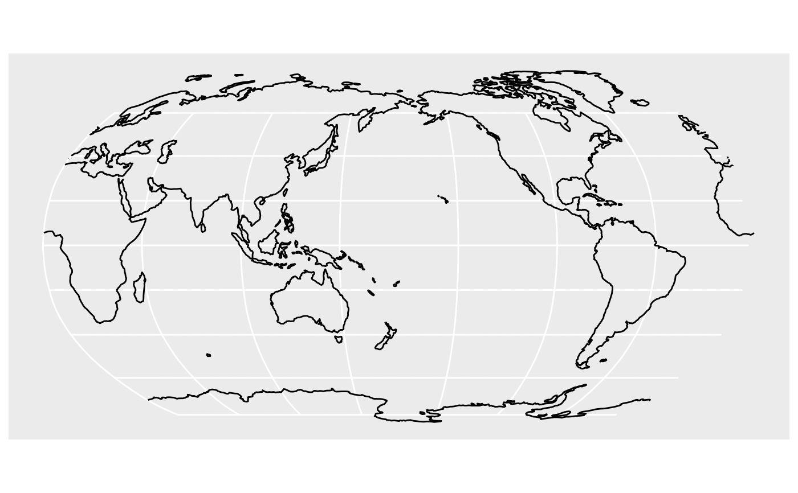

st_window does a st_transform but first cuts the data to an
appropriate view window and so avoids problems with objects wrapping around
the back of the globe
Usage
st_window(m, crs = himach::crs_Atlantic, longit_margin = 0.1)Details
st_wrap_dateline _should_ handle the break in
a map projections but uses `GDAL` for this. Given persistent issues in
installing GDAL, st_window achieves the same using s2 instead.
It works for any 'simple' projection, in the sense of one that has a dateline that is a single line of longitude: ie the proj4string contains either "longitude_of_center", so the dateline is that +180; or not, in which case it assumes the "longitude_of_center" is 0.
Examples
world <- sf::st_as_sf(rnaturalearthdata::coastline110)
w_pacific <- st_window(world, crs_Pacific)
ggplot2::ggplot(w_pacific) + ggplot2::geom_sf()

# bad - not run - dateline problem example
# ggplot2::ggplot(st_transform(world, crs_Pacific)) +
# ggplot2::geom_sf()